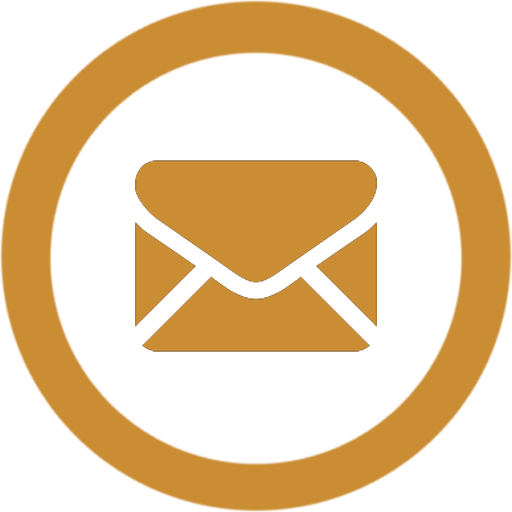

Those who are subjected to this verse believe that it can only function naturally if consumed, and if a person is constantly craving for drugs on a daily basis, they are anxious for it and rely on the fact that it is impossible to live without it. Substance abuse can lead to serious emotional, physical and social relationship problems. You are in the vortex of such an addiction. However, getting out of it is not easy.
Most of us think that drugs are a mind-blowing, moody device, a chemical or drug that alters the human brain's Arya system. Drugs, such as coffee, alcohol, tobacco, prolonged drug use, artificial devices, etc., can be called drugs.
As people begin to consume alcohol first, they begin to use drugs to relieve stress, to pressure their friends, to pursue academic or sport, or to forget about stress and problems. TDOWD With gradual use of drugs, changes in the brain make individuals want more and more into drugs. They go out of control. Individuals lose their temper. Not really wanting to quit the hobby, they are attracted to it again and again. People with impaired personality and low self-esteem tend to be drug addicts. Addicts are zombies and cannot change their behaviour There are common notions in society that this addiction can be overcome if it is determined to no longer be a drug. The reality is that genes and the surrounding environment may be the most likely cause of addiction, as well as individual choice. The small part of 'not consuming' - however, they use a variety of drugs, such as injecting, chewing, and injecting drugs, smoking, etc., to get out of it altogether. Drugs are the most frequently used by addicts.
Drug in take releases dopamine, a transporter in the brain of a human. When you use drugs, it replicates the brain's message system, thus releasing dopamine, which causes pleasure in the brain. If you are constantly intoxicated, gradually the brain will decrease, if you are constantly intoxicated, you will experience the illusion that you are experiencing the same pleasure that you had in the first place. There will be no benefits to individuals. Chronic drug consumption can affect brain cognitive functioning. In addition, individuals may become weak over time and become depressed.
Although there are no kitsch for addiction, the options outlined below help to alleviate addiction and keep you drug free. The QU depends on the drug you are using and the associated medical or mental health disorders. Long-term follow-up is important to preventing depression, and a thorough evaluation is needed to detect substance abuse.
Run by psychologists for the diagnosis of substance abuse disorder, most mental health professionals use the criteria used in the Diagnostic and Statistical Manual of Mental Disorders (DSM –5) published by the American Psychiatric Association for the treatment of substance abuse disorder.
The duration of individual, group and family therapy is determined, as well as treating the severity of addiction, by treating it as outpatient and outpatient.

An interactive session with victims to assess their attachment towards their previous addictions

Municipality Corporation members extended their support towards our initiative

Out of mess, less in stress.
Value education and counseling
for all

Medical attention given to every patient
Interaction at a personal level required for betterment of our services

Engaging in personal feedback mechanism

Group discussions with groups of senior citizens

Medical attention given to every patient

Interaction at a personal level required for betterment of our services

Medical attention given to every patient

Interaction at a personal level required for betterment of our services

Medical attention given to every patient

Interaction at a personal level required for betterment of our services

Interaction at a personal level required for betterment of our services

Medical attention given to every patient

Out of mess, less in stress.
Value education and counseling
for all

Medical attention given to every patient

Out of mess, less in stress.
Value education and counseling
for all
Community services are provided at the community level to address the effects of drugs.

Inculcating new habits for a better phase of life

All set to take on life with rejuvenated spirit

Resume, Revive, Restart. A place where healing happens

All set to take on life with rejuvenated spirit

All set to take on life with rejuvenated spirit

All set to take on life with rejuvenated spirit

All set to take on life with rejuvenated spirit

Team of Shri Vaishnavi Rural Development striving to help people ridden with addictions

Teamwork to bring about progressive all round development

Gram Panchayat members visiting and observing our community

Team of Shri Vaishnavi Rural Development striving to help people ridden with addictions

Gram Panchayat members visiting and observing our community
Shri Vaishnavi IRCA Centre has been treating many addicts for the past few years. The centre has been providing treatment to addicts through various activities throughout the day. Being an auto driver I have seen many people feel good about this centre. I have been an auto driver for the last 3 years and have taken and registered numerous addicts. Now they are all addiction free and living the good life.
— Chandu Loni ( Auto Driver )
I visited the Sri Vaishnavi IRCA Centre on a regular basis, more than 15 people were admitted for treatment. When I interacted with registered therapists, all therapists spoke positively about the facilities offered at the centre. The centre was found to offer facilities such as yoga, prayer, pranayama and personal therapy. And when he spoke to the staff, he felt good about the organization. The staff here are trained and trained.
— District Health Officer, Bijapur
Mr. Virupakshappa Majjagi was admitted to the inpatient, treatment and addiction center of the allied holistic addiction center over the last 3 years. I practically realized many new things in the course of treatment there. I have been living an addiction free life for the last 5 years. The main reason for this is the Sri Alliance, which is acting as a livelihood for the addict. I have enrolled more than 8 addicts to this center in the last 2 years. Now, 90% percent of them are addiction free.
— Beneficiary
|  |
|
9632233660
Near Sangam Hotel, Sompur road, Sindagi (Dist), Vijaypur
Designed by Bharath Gorental. All rights reserved.